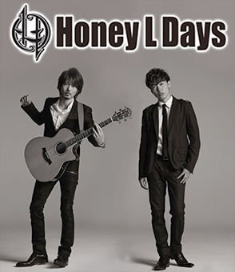

Honey L Days (ハニー・エル・デイズ)

学生時代からバンドを中心にライブ活動を行っていた
KYOHEI(Vo,Gt)と、ゴスペルグループで活動を行っていた
MITSUAKI(Vo)が舞台出演をきっかけに出会い渋谷の
ライブハウスを拠点にロックヴォーカルデュオとしての
活動を本格化。
2008年にシングル「Go⇒Way / Center of the World」
でavex traxよりメジャーデビューを果たす。
KYOHEIが中心となって生み出す、熱情的なロックチューン や、叙情的なバラード。喜びや憂い、強さや弱さなど、人生 の様々な場面を表現するメロディーとメッセージに、互い を引き立て合うツインヴォーカルが重なったとき、リスナー の人生を紡ぐメロディーは完成する。 そのアーティストイズムがHoney L Daysの最大の魅力 であり、それは揺らぐことのないHoney L Daysの個性 そのものである。
2010年にリリースした4thシングル「まなざし」は、男子新体操を題材にして話題となったTBS系 ドラマ「タンブリング」の主題歌に起用され、着うたが100万ダウンロードを記録。 夢に向かって諦めずに歩んでいくという等身大でストレートな歌詞が、頑張る全ての人の背中を 押す応援歌として大きな反響を呼び、Honey L Daysがヒューマンタッチなソングライター＆ ヴォーカリストであることを世に広く知らせた、代表曲の一つである。
個々の活動にも精力的で、MITSUAKIは「東山光明」名義で俳優活動を行っており、ミュージカル 「ロミオ＆ジュリエット」（演出 小池修一郎）などに出演。 またKYOHEIは、映画・舞台の音楽監督として数多くの作品を手がけており、それぞれが ヴォーカルデュオに限らない多才ぶりを発揮しながら、Honey L Daysとしてのネクストステージへ 強いまなざしを向けている。
MITSUAKI (Vo) 写真右
生年月日：1980年5月22日
出身地：大阪府
血液型：A型
音楽を始めたきっかけ：大学時代、ゴスペルサークルで歌のもつ力を肌で感じ衝撃を受けたこと
＜主なソロ活動（東山光明 名義）＞
2008年 映画「僕らの方程式」
2009年 舞台「Tower of Sugar」
2010年 ミュージカル「King of the Blue」
2011年 舞台「陰陽師～Light and Shadow～」
2013年 ミュージカル
「Zanna～a musical fairytale～」
ミュージカル「ロミオ＆ジュリエット」
朗読劇「しっぽのなかまたち」
KYOHEI (Vo,Gt) 写真左
生年月日：1981年11月29日
出身地：神奈川県
血液型：B型
音楽を始めたきっかけ：父親が持っていた大量のレコード・CDの中から「Deep Purple」のアルバムを聞き、エレキギターに興味を持ってストラトを弾いたこと
＜主なソロ活動＞
2008年 映画「僕らの方程式」
2013年 朗読劇「私の頭の中の消しゴム 5th letter」
＜音楽監修実績＞
2008年 舞台「斜塔～シャトウ～」
2009年 舞台「Love Musical」
2010年 舞台「King of the Blue」
2011年 舞台「陰陽師～Light and Shadow～」
2012年 舞台「レシピエント」
2013年 舞台「タンブリングVol.4」
2014年 映画「俺たちの明日」